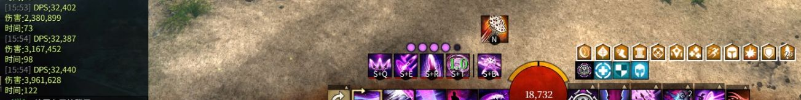

直伤匕剑/巨剑灵刃无食物无扳手32.4k
幻影除魔，幻影剑客，利刃呼唤，切武器|幻影剑客，利刃呼唤，强力钉刺，幻影狂战，幻影狂战=1=幻影狂战反色=幻光纹章，心灵穿刺，镜像飞刃，5豆=和谐咏刃，剑刃暴雨，幻影除魔，5豆=悲伤咏刃，悲伤咏刃>6500=悲伤咏刃CD=和谐咏刃CD=不谐咏刃，狂刃风暴，不谐咏刃>6500=失真咏刃，旋刃魂曲，幻影狂战=2=切武器，狂刃风暴=2=切武器|千刀万剐|蔑视，谦逊纹章，不谐咏刃，幻象还击，幻象之波 幻影除魔,e,761|幻影剑客,5,873|利刃呼唤,2,324|切武器,`,500|强力钉刺,t,0,,,,,,,,,,,,,,,,,触发,1,10000|幻影狂战,4,559|幻影狂战反色,,,,,,,,,ifnot|幻光纹章,q,916|心灵穿刺,3,311|镜像飞刃,2,721|5豆|和谐咏刃,+q,644|剑刃暴雨,r,677|悲伤咏刃,+e,482|悲伤咏刃CD,,,,,,,,,,,,,1,706,903,744,938|和谐咏刃CD,,,,,,,,,,,,,1,662,903,698,938|不谐咏刃,+r,480|狂刃风暴,3,444|失真咏刃,+t|旋刃魂曲,+b|千刀万剐,b|蔑视|谦逊纹章,b,1000|幻象还击,4,200,4,750|幻象之波,5,500 [&DQcKGQEdQiojDyMPjwGPAd0a3RppAWkB5RrtEgAAAAAAAAAAAAAAAAAAAAADLwBaADIAAA==]
感谢m佬的指点！

评论列表（17）
大佬 带灌注了吗？ 我只能打28-29K
@时间无言如此这般 精准灌注要带，除此以外有1个+5威能的属性灌注
那个蔑视要取色哪里啊？
@墨鱼 魔像蔑视条出现以后，左边靠近起点的地方取色就可以。
技能放到一半卡了好几秒才继续放技能怎么解决
@coffr 一键取色的问题 重新手动取色一下解决了 蔑视和谦逊文章是取哪个键啊
@coffr 魔像设置里加上蔑视以后，等头像下面的蔑视条变绿，在左边靠近起点的地方取色。谦逊纹章是精英技能，把千刀万剐换掉取色就可以。
@coffr 每次都这样吗？我还没有遇到过
很奇怪 导入后为啥没有延迟和按键。。。 好久没这个问题了。。。 我重新弄一个试试
技能落了个“幻影剑客”
@独木成林 起手循环和主循环都有幻影剑客，不少的
@不懂 嗯嗯 谢谢大佬回复，顺便问下用的那个版本做的呀，我用最新版的导入 没有延迟 按键 和其他内容 只有技能名
@独木成林 我已经修了，重新导入，之前他自己删了一些符号。
@melis 主循环我是用SC数据直接导入的，自带了延迟。后面那个破蔑视的指定技能组是自己后加进去的，是这个因素让数据分享有错误了吗？
@不懂 就是F9取色时最后那里有一个空的没有名称的技能，但删不掉
@melis 想起来了，当时是在写蔑视技能时把不协永刃写错了，取色的时候发现了，就在技能循环里修改了名字，然后取色的那个界面里就变成没有技能名字的了。
@melis 谢谢M大大